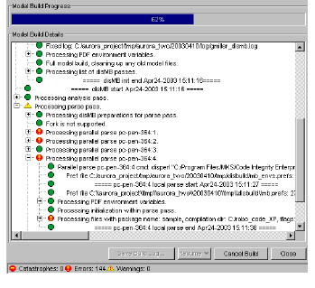
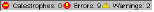
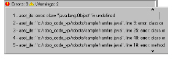
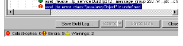

Model Build Information
When you build a model, the contents pane displays information such as the following:

• Model Build Progress displays the progress of the model build.
• Model Build Details displays messages about the model build progress. For information on reading build log messages, see Analyzing Model Build Output.
• A summary of the number of catastrophes, errors, and warnings that occurred during the build.
Clicking an error icon () displays a numbered list of errors that occurred during the build.

From the error list, selecting an error highlights the error in the Model Build Details.

To analyze a build log and debug a model, see Analyzing Logs and Debugging Models.